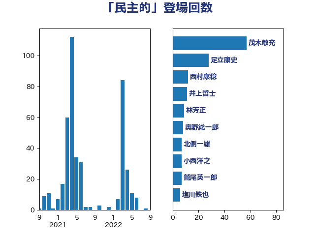

単語「民主的」

| 茂木敏充 | 自由民主党 | 57 回 |
| 足立康史 | 日本維新の会 | 28 回 |
| 西村康稔 | 自由民主党 | 12 回 |
| 井上哲士 | 日本共産党 | 11 回 |
| 林芳正 | 自由民主党 | 9 回 |
| 奥野総一郎 | 立憲民主党 | 8 回 |
| 北側一雄 | 公明党 | 7 回 |
| 小西洋之 | 立憲民主党 | 7 回 |
| 鷲尾英一郎 | 自由民主党 | 7 回 |
| 塩川鉄也 | 日本共産党 | 6 回 |
| 北神圭朗 | 無所属 | 5 回 |
| 穀田恵二 | 日本共産党 | 5 回 |
| 菅義偉 | 自由民主党 | 5 回 |
| 櫻井周 | 立憲民主党 | 4 回 |
| 田村貴昭 | 日本共産党 | 4 回 |
| 石橋通宏 | 立憲民主党 | 4 回 |
| 中川正春 | 立憲民主党 | 3 回 |
| 岡田克也 | 立憲民主党 | 3 回 |
| 末松信介 | 自由民主党 | 3 回 |
| 枝野幸男 | 立憲民主党 | 3 回 |
| 猪口邦子 | 自由民主党 | 3 回 |
| 玉木雄一郎 | 国民民主党 | 3 回 |
| 田島麻衣子 | 立憲民主党 | 3 回 |
| 赤嶺政賢 | 日本共産党 | 3 回 |
| 逢沢一郎 | 自由民主党 | 3 回 |
| 野田佳彦 | 立憲民主党 | 3 回 |
| 三木圭恵 | 日本維新の会 | 2 回 |
| 中野洋昌 | 公明党 | 2 回 |
| 吉田宣弘 | 公明党 | 2 回 |
| 國場幸之助 | 自由民主党 | 2 回 |
| 堤かなめ | 立憲民主党 | 2 回 |
| 大塚耕平 | 国民民主党 | 2 回 |
| 小熊慎司 | 立憲民主党 | 2 回 |
| 山添拓 | 日本共産党 | 2 回 |
| 岸信夫 | 自由民主党 | 2 回 |
| 工藤彰三 | 自由民主党 | 2 回 |
| 平井卓也 | 自由民主党 | 2 回 |
| 徳永久志 | 立憲民主党 | 2 回 |
| 打越さく良 | 立憲民主党 | 2 回 |
| 有村治子 | 自由民主党 | 2 回 |
| 本村伸子 | 日本共産党 | 2 回 |
| 松沢成文 | 日本維新の会 | 2 回 |
| 柴田巧 | 日本維新の会 | 2 回 |
| 森山浩行 | 立憲民主党 | 2 回 |
| 森本真治 | 立憲民主党 | 2 回 |
| 浜田聡 | NHK党 | 2 回 |
| 田村智子 | 日本共産党 | 2 回 |
| 石川博崇 | 公明党 | 2 回 |
| 石川大我 | 立憲民主党 | 2 回 |
| 緒方林太郎 | 無所属 | 2 回 |
| 舩後靖彦 | れいわ新選組 | 2 回 |
| 藤原崇 | 自由民主党 | 2 回 |
| 馬場伸幸 | 日本維新の会 | 2 回 |
| 高良鉄美 | 無所属 | 2 回 |
| 麻生太郎 | 自由民主党 | 2 回 |
| 上川陽子 | 自由民主党 | 1 回 |
| 世耕弘成 | 自由民主党 | 1 回 |
| 中西祐介 | 自由民主党 | 1 回 |
| 加藤勝信 | 自由民主党 | 1 回 |
| 大塚拓 | 自由民主党 | 1 回 |
| 大石あきこ | れいわ新選組 | 1 回 |
| 安江伸夫 | 公明党 | 1 回 |
| 小林鷹之 | 自由民主党 | 1 回 |
| 小田原潔 | 自由民主党 | 1 回 |
| 山井和則 | 立憲民主党 | 1 回 |
| 山崎正昭 | 自由民主党 | 1 回 |
| 山東昭子 | 自由民主党 | 1 回 |
| 山田勝彦 | 立憲民主党 | 1 回 |
| 山田美樹 | 自由民主党 | 1 回 |
| 平木大作 | 公明党 | 1 回 |
| 掘井健智 | 日本維新の会 | 1 回 |
| 新藤義孝 | 自由民主党 | 1 回 |
| 松原仁 | 立憲民主党 | 1 回 |
| 森田俊和 | 立憲民主党 | 1 回 |
| 武田良太 | 自由民主党 | 1 回 |
| 武部新 | 自由民主党 | 1 回 |
| 浅田均 | 日本維新の会 | 1 回 |
| 渡辺周 | 立憲民主党 | 1 回 |
| 牧山ひろえ | 立憲民主党 | 1 回 |
| 牧義夫 | 立憲民主党 | 1 回 |
| 石井正弘 | 自由民主党 | 1 回 |
| 石井章 | 日本維新の会 | 1 回 |
| 羽田次郎 | 立憲民主党 | 1 回 |
| 舞立昇治 | 自由民主党 | 1 回 |
| 舟山康江 | 国民民主党 | 1 回 |
| 藤田文武 | 日本維新の会 | 1 回 |
| 谷田川元 | 立憲民主党 | 1 回 |
| 重徳和彦 | 立憲民主党 | 1 回 |
| 金子恭之 | 自由民主党 | 1 回 |
| 鈴木俊一 | 自由民主党 | 1 回 |
| 鈴木宗男 | 日本維新の会 | 1 回 |
| 鈴木憲和 | 自由民主党 | 1 回 |
| 階猛 | 立憲民主党 | 1 回 |
| 高木かおり | 日本維新の会 | 1 回 |
| 高木毅 | 自由民主党 | 1 回 |